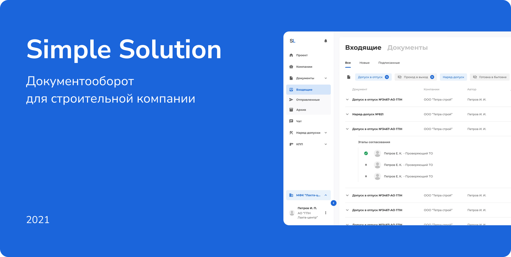
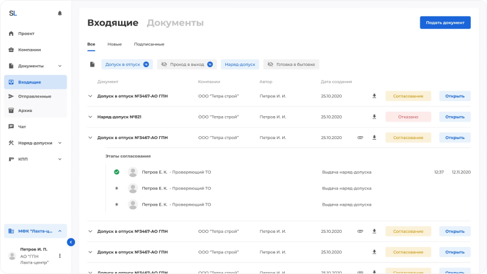

Simple Solution
Документооборот для строительной компании
Контекст
В 2020 году я присоединилась к ЛИИС и занялась разработкой системы документооборота для крупной строительной компании.
До внедрения системы согласования проходили через почту, мессенджеры и бумажные версии. Процесс был непрозрачным: участники не понимали, где находится документ и кто должен действовать дальше. Из-за возвратов и потери контекста согласование занимало недели.
Цель продукта — перевести процесс в единую систему и сократить срок прохождения документов.
Исследование
Совместно с продакт-менеджером мы провели бенчмаркинг и интервью с инженерами, руководителями проектов и сотрудниками строительной площадки.
Мы обнаружили:
- согласование проходит цепочкой ролей
- документы регулярно возвращаются назад
- главная потребность — отслеживание статуса, а не хранение файлов
- пользователи работают в условиях дедлайнов и не готовы «разбираться в интерфейсе»
Отсюда сформировался принцип: интерфейс должен объяснять процесс, а не описывать документ.
Проектирование решения
Я построила интерфейс вокруг состояния документа и следующего действия пользователя.
Пользователь в любой момент должен понимать:
- что происходит сейчас
- кто следующий участник
- требуется ли действие от него
Проверка гипотез
По моей инициативе мы провели пользовательские проверки с будущими пользователями системы.
Я подготовила сценарии согласования, собрала интерактивный прототип в Figma и провела серию модерируемых тестов.
В проверках участвовали специалисты разных ролей: проектировщики, инженеры ПНР и руководители проектов.
Участники выполняли задания без подсказок, а я фиксировала ошибки, паузы и неверные интерпретации состояний.
Несколько раундов тестирования (7 респондентов) позволили упростить сценарии и привести интерфейс к привычной для специалистов логике работы.
Результат
После внедрения:
- пользователи перестали уточнять статус через почту и мессенджеры
- координаторы больше не отслеживали документы вручную
- участники понимали, требуется ли от них действие
- система начала использоваться как основной канал согласования
Срок согласования сократился с ~2 недель до 1 дня.
Влияние на бизнес
Компания получила предсказуемость этапов строительства: согласование перестало быть блокирующим фактором выполнения работ.
Система заменила ручную координацию и стала операционным инструментом управления процессом, а не архивом файлов.
